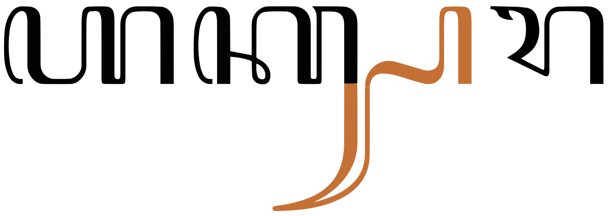
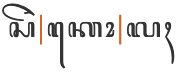

There are currently difficulties in finding a workable Unicode font for Javanese. The original Noto Sans Javanese font uses shapes that are over-simplified for some Javanese users but the latest version is better, and the often recommended font, Tuladha Jejeg, is based on Graphite technology, and so only works on Firefox with Graphite rendering enabled (ie. not on Chrome, Safari, etc.). The default webfont for this page is a Tuladha Jejeg webfont, with a Noto fallback webfont. If not using Firefox, you can switch between fonts using the vertical blue bar, bottom right.
This page brings together basic information about the Javanese script and its use for the Javanese language. It aims to provide a brief, descriptive summary of the modern, printed orthography and typographic features, and to advise how to write Javanese using Unicode.
Select part of this sample text to show a list of characters, with links to more details.
Change size: 28px
ZWSP has been added between orthographic syllables in the text below in order to allow the lines to wrap. The major browsers don't wrap them automatically.
Origins of the Javanese script, 17thC – today, but with limited usage (endangered).
Phoenician
└ Aramaic
└ Brahmi
└ Tamil Brahmi
└ Pallava
└ Kawi
└ Javanese
+ Balinese
+ Batak
+ Baybayin
+ Lontara
+ Makasar
+ Sundanese
+ Rencong
+ Rejang
Use of the Javanese script ended abruptly during the Second World War, when its use was forbidden by the occupying forces. Its use has since declined, and everyday Javanese is now generally written in the Latin script, although the Javanese orthography is still taught in most elementary schools and some junior high schools in Javanese speaking areas. There are no newspapers or magazines being printed in the Javanese script.
ꦲꦏ꧀ꦱꦫꦗꦮꦲꦤꦕꦫꦏ
The Javanese script derives from the ancient Brahmi script, via Old Kawi. It is the pre-colonial script of the Javanese language spoken on the Indonesian islands of Java and Bali and is used to write the Tengger and Osing languages, also spoken in Java and Bali. Historically it was also used to write the Bali language, which is now written largely in the Latin and the (closely related) Balinese scripts, and the Sunda language, which is now written in the Latin and Arabic scripts.
Numerous efforts to standardize the script were made in the late 19th to early 20th-century, with the invention of the script's first metal type and the development of concise orthographic guidelines.
Javanese is an abugida, ie. consonants carry an inherent vowel sound that is overridden, where needed, using vowel signs. See the table to the right for a brief overview of features of the modern Javanese orthography.
Javanese text runs left to right in horizontal lines. Words are not separated by spaces, however syllables may be separated by ZWSP, as long as they don't fall inside a stack. Spaces may be used to separate phrases.
The 20 consonant letters used for pure Javanese words are supplemented by 10 more which are used as honorifics, a little like capital letters, and 5 more used in Sanskrit words. Repertoire extensions for 8 non-native sounds are achieved by applying the cecak telu diacritic to characters.
Consonant clusters are represented by stacked consonants (many subjoined consonants have alternative shapes) or conjoined pairs. Occasionally, a visible pangkon (virama) is used.
Stacked consonants and conjoined pairs span word boundaries.
Word-final consonant sounds may be represented by 4 dedicated combining marks. Otherwise, if nothing follows, they are ordinary consonants followed by a visible A9C0.
The Javanese orthography is an abugida with 2 inherent vowels. Other post-consonant vowels are written using 5 vowel signs, all combining marks. It is mandatory for 2 of the consonant+vowel sequences to be written using vocalics, rather than vowel signs.
There is 1 pre-base glyph and no circumgraphs. Only one multipart vowel is used in modern Javanese orthography, although more exist when writing Sanskrit or Kawi in this script. The multipart vowel used in modern Javanese involves only 2 vowel signs, and places glyphs on either side of the base consonant(s).
Standalone vowel sounds are written using independent vowels when there is a need to distinguish normal words from proper nouns or foreign words. The normal approach for standalone vowels is to apply vowel signs to A9B2.
Click on the sounds to see where else in the document they are referred to.
Sounds in parentheses are non-native or allophones. Source Wikipedia.
Vowel sounds
i u e o are pronounced ɪ ʊ ɛ ɔ, respectively in closed syllables.wl,#Vowels
e and o are pronounced ɛ and ɔ, respectively, in open syllables when followed by one of i u. Otherwise they may be pronounced ə.wl,#Vowels
In the standard dialect of Surakarta, a is pronounced ɔ in word-final open syllables.wl,#Vowels
Diphthongs ai and aw are not used in modern Javanese.ws,#Swara
Consonant sounds
labial
dental
alveolar
post-
alveolar
retroflex
palatal
velar
glottal
stops
pb
td
ʈɖ
kg
ʔ
affricates
t͡ʃ
aspirated
t͡ʃʰ
fricatives
s
h
nasals
m
n
ɲ
ŋ
approximants
w
l
j
trills/flaps
r
Most sources (eg. Daniels) imply that the voiced plosives are voicedd. Comriec describes the voiceless plosives as virtually unaspirated, and that the voiced plosives are devoiced at the end of a word. Wikipedia says that the Javanese "voiced" phonemes are in fact voiced voiceless, with breathy voice on the following vowel, the difference being described as stiff voice versus slack voice.wl,#Consonants Here we use the more common transcription.
The sound ʔ appears between words ending with a and the suffix ake, eg. lunga+ake -> lungaʔake.c
Structure
Root words are typically disyllables of the form Cˡ V Cˡ V Cˡ, where Cˡ represents an optional consonant or consonant cluster, and V represents a vowel. Most commonly, this represents CVCVC, followed by CVCCVC.c
A Javanese phonetic syllable can begin with a vowel, a consonant, or a consonant cluster.
Syllable-initial consonant clusters usually have either r or j in the second position, or may have both.
According to Comrie, word-initial consonant clusters may involve prenasalised sounds such as mb, nd, ndh, nj or nng, which appear to be written using unconnected consonants side by side,c eg.
ꦩꦧꦸꦫꦸ
Syllable-final consonants are usually a single sound.
In the orthography, phonetic syllable boundaries don't always coincide with the typographic units used. See segmentation for details.
Vowels
Vowel summary table
The following table summarises the main vowel to character assigments.
The left column shows vowel signs; the right shows standalone letters. ⓘ represents an inherent vowel. A following dotted circle indicates a closed syllable.
Javanese has two possible inherent vowel sounds: a and ɔ. The choice of inherent vowel can depend on the speaker's dialect: speakers of Western Javanese dialects tend to pronounce the inherent vowel as a, while those of Eastern Javanese prefer ɔ.ws,#Form So ka/kɔ is written by simply using the consonant letter.
Wikipedia describes the following rules by Wewaton Sriwedari for determining the inherent vowel of a letter:ws,#Form
A letter stands for a syllable with the vowel ɔ if the previous letter contains diacritics.
A letter stands for a syllable with the vowel a if the following character contains diacritics.
The first letter of a word normally has the ɔ vowel, unless it precedes two other letters without diacritics, in which case the first letter has the a vowel.
Combining marks used for vowels
ꦏꦶ
kiU+A98F JAVANESE LETTER KA + U+A9B6 JAVANESE VOWEL SIGN WULU
Javanese uses the following dedicated combining marks for vowels. They may be used on their own, or in combination with others (see compositeV).
ꦶ␣ꦸ␣ꦺ␣ꦼ␣ꦴ
Additional information about archaic forms and variants of these characters and others mentioned below can be found in the character notes document.
A9B4 was originally a length mark, but in modern Javanese it is only used in the combination described in the section compositeV.
When a vowel sign follows a subjoined consonant it appears above the stack.
The word kanthi, where the i appears above the n.
Three of the vowel signs are spacing marks, meaning that they consume horizontal space when added to a base consonant.
Four more vowel signs are not used in modern Javanese.
ꦷ␣ꦹ␣ꦵ␣ꦻ
An orthography that uses vowel signs is different from one that uses simple diacritics or letters for vowels, in that the vowel signs are generally attached to an orthographic syllable, rather than just applied to the letter of the immediately preceding consonant. This means that pre-base vowel signs and the left glyph of circumgraphs appear before a whole consonant cluster if it is rendered as a conjunct (see prebase).
In Javanese, unlike many other scripts, including Balinese, when a vowel is represented by multiple glyphs either side of a base character two separate combining marks need to be added to the base. Javanese has no circumgraphs (ie. a single code point that places glyphs around the base).
Only one such multipart vowel is used for modern Javanese, A9BA A9B4, which represents the sound o. Both characters are typed and stored after the base character, and should be in the order shown.
A multipart vowel: the sound lo is written using 3 characters.show composition
ꦥꦸꦭꦺꦴ
A two-part vowel associated with a consonant cluster appears before and after the whole cluster, whether it is conjoined or stacked. This is a reminder that vowel signs are applied to the orthographic syllable, rather than to a single letter. In fig_composite_word_break this actually extends across a word boundary, since the last and first letters of the adjoining words form a conjunct cluster. This means that the pre-base part of the vowel sign appears to be within the previous word.
The o surrounds the n s in mangan soto.show composition
ꦩꦔꦤ꧀ꦱꦺꦴꦠꦺꦴ
A number of archaic vowels are also represented by combinations of the basic vowel signs, but are not used in modern Javanese.
ꦻꦴ␣ꦼꦵ␣ꦼꦴ
Show details about vowel glyph positioning.
The following list shows where vowel signs are positioned around a base consonant to produce vowels, and how many instances of that pattern there are. The figure after the + sign represents combinations of Unicode characters,
2 pre-base, eg. ꦏꦺke
2 post-base, eg. ꦏꦴkː
3 superscript, eg. ꦏꦶki
2 subscript, eg. ꦏꦸku
+2 pre+post-base, eg. ꦏꦺꦴkeː
Pre-base vowel sign
ꦺ
One vowel sign appears to the left of the base consonant letter or cluster in modern Javanese.
The pre-base vowel sign e. Although pronounced and stored after r, it appears before the kr cluster.show composition
ꦒꦿꦺꦗ
This is a combining mark that is always stored after the base consonant. The rendering process places the glyph before the base consonant.
A similar vowel sign is no longer used.
ꦻ
Standalone vowels
Javanese has two ways to represent standalone vowels.
Vowel signs
ꦲꦶ␣ꦲꦸ␣ꦲꦺ␣ꦲꦼ␣ꦲ
The normal approach combines a vowel sign with A9B2, eg.
ꦧꦲꦸꦱꦱ꧀ꦠꦿꦩꦲꦺꦴꦱ꧀
Without a vowel sign the letter A9B2 represents a, eg.
ꦲꦕꦫ
However, it may alternatively represent the sound ha. The reading is ambiguous, eg. compare the previous example with this:
ꦲꦤꦕꦫꦏ
The same applies for other combinations of this base letter and vowel sign.
Independent vowels
ꦆ␣ꦈ␣ꦌ␣ꦎ␣ꦄ
There are 8 independent vowel letters in the Javanese block, of which 5 are used in modern text.
The independent vowel letters are used in Javanese to distinguish proper nouns or foreign words from ordinary wordsu, eg. compare the following two words, which include an adjective and a personal name (both have the same pronunciation):
ꦲꦪꦸꦄꦪꦸ
Other forms
Modern Javanese only uses short vowels. Other characters or sequences of characters were used for long vowels and diphthongs in the past or for other languages.
ꦇ␣ꦅ␣ꦈꦴ␣ꦄꦴ␣ ␣ꦍ␣ꦎꦴ
Three of the above use A9B4 to produce long sounds.
Unlike Javanese, Kawi uses A985 and A986 for short and long, respectively.d
Tones
Javanese is not a tonal language.
Vowel absence
ꦏ꧀
kU+A98F JAVANESE LETTER KA + U+A9C0 JAVANESE PANGKON
Where no letter follows a consonant and the vowel is silent, for example at the end of a sentence or isolated word or before a number, a visible A9C0 is used to indicate that the inherent vowel is suppressed, eg. the example just below the heading of this section explicitly represents just the sound k.
꧀
The pangkon is also used to produce conjunct forms for consonant clusters (stacking or conjoined shapes), in which case it is invisible (see clusters). Because Javanese commonly combines the last character of one word and the first of another into a conjunct, the pangkon is often not visible after words that end with a consonant within a sentence.
A visible pangkon at the end of a word.show composition
ꦏꦿꦸꦥꦸꦏ꧀
There are some exceptions, especially where the pangkon may be used to disambiguate words, eg.
ꦧꦶꦱ꧀ꦠꦿꦤ꧀ꦱ꧀ꦗꦏꦂꦠ
No pangkon is needed between an onset consonant and a medial consonant, or after a dedicated final consonant.
Vowel sounds mapped to characters
This section maps Javanese vowel sounds to common graphemes in the Javanese orthography.
The left column contains vowel signs; the right column contains standalone letters. A following circle indicates a closed syllable.
Click on a grapheme to find other mentions on this page (links appear at the bottom of the page). Click on the character name to see examples and for detailed descriptions of the character(s) shown.
Javanese vocalics have no corresponding vowel signs. They do, however, have conjoined forms, used in consonant clusters.
Archaic forms
Two more vocalic letters or sequences are not used in modern Javanese, but are used for writing Kawi and Sanskrit.ws,#Swara
ꦉꦴ␣ꦋ
Consonants
Consonant summary table
The following table summarises the main consonant to character assigments.
The left-hand column contains basic Javanese consonant letters and consonants using the cecak telu; the right-hand column contains murda and mahaprana letters.
Only 20 of the consonants in the Javanese Unicode block are used for pure Javanese language text. Some others (murda) are used as a kind of uppercase letter, but the remainder are used for words derived from Sanskrit or Kawi, or are archaic forms.
The characters listed here and in the following sections also have conjoined and/or subjoined forms, which may differ significantly from those shown here. See clusters for a list of glyph shapes.
ꦥ␣ꦧ␣ꦠ␣ꦢ␣ꦛ␣ꦝ␣ꦏ␣ꦒ␣ ␣ꦕ␣ꦗ␣ ␣ꦱ␣ꦲ␣ ␣ꦩ␣ꦤ␣ꦚ␣ꦔ␣ ␣ꦮ␣ꦫ␣ꦭ␣ꦪ
A9B2 represents either ha or the standalone vowel a.
Murda letters
Murda forms can be viewed as a kind of capital letter for proper nouns (not sentence initial letters), used as honorifics. They are used to replace an ordinary letter form in the first syllable of the name. However, not all letters have a murda form, so if there is no letter in the first syllable that has a murda form, one is used for the next syllable in the name that has one.
Highly respected names may be all 'capitalized' to the extent that the corresponding murda are available.
ꦦ␣ꦨ␣ꦡ␣ꦑ␣ꦓ␣ ␣ꦖ␣ ␣ꦯ␣ ␣ꦟ␣ꦘ
A996 is only attested as a subjoined form, ꧀ꦖ The non-subjoined form shown just above list is a modern-day reinvention.ws,#Wyanjana
A9AF is a rare letter which, when used with other characters, represents the Chinese sound se, ie. ꦯ͜ꦌ̈ Another represents the Chinese syo, ie. ꦯ꦳ꦾꦺꦴ
A9AC not used in modern text, and also not widely known, was used historically by some writers to address royal figures..ws,#Wyanjana
Mahaprana letters
These are letters that are not basic forms, nor are repurposed as murda consonants.
ꦣ␣ꦜ␣ꦞ␣ꦙ␣ꦰ
Mahaprana forms were originally aspirated consonants used in Sanskrit and Kawi transliterations (mahaprana means aspirated). They are rarely, if ever, found in modern text.
Repertoire extension
The following combinations, called aksara rékan (ꦲꦏ꧀ꦱꦫꦫꦺꦏꦤ꧀), are used to represent foreign sounds. There may be some variance around which combinations produce which sounds.ws,#R%C3%A9kan
Javanese uses A9B3 with a similar consonant to represent most foriegn sounds, initially those from Arabic, but then also those from Dutch, Indonesian, and English.
ꦐ␣ꦔ꦳␣ꦥ꦳␣ꦢ꦳␣ꦗ꦳␣ꦱ꦳␣ꦏ꦳␣ꦒ꦳␣ꦲ꦳
A990 is used for writing q in Sasak.
When consonants are subjoined there can be some ambiguity about which consonant the cecak telu applies to. For example, the following look identical:ꦏ꦳꧀ꦗkˑ͓ʤkzaꦏ꧀ꦗ꦳k͓ʤˑxja
Wikipedia has a set of Chinese sounds that are represented using some combining characters from a non-Javanese block.ws,#Additional_Aksara
Onsets
Three dedicated combining characters represent medial consonants (wyanjana), making it easy to tell that the consonant is part of a syllable-initial cluster and not the start of a new syllable.
ꦿ␣ꦽ␣ꦾ
Examples of use include
ꦥꦿꦩꦸꦏꦏꦾꦲꦶꦏꦤ꧀ꦗꦼꦁky̆hikn͓ʤəŋ̽kyai kanjengꦕꦕꦶꦁꦏꦽꦩꦶʧʧiŋ̽kr̥̆micacing kremi
Balinese doesn't have these dedicated medial consonants.
Finals
Word-final consonant sounds with no following consonant may be represented by ordinary consonant characters, followed by a visible A9C0 character, eg. ꦏꦿꦸꦥꦸꦏ꧀ꦏꦔꦼꦤ꧀
If another word or consonant does follow the word-final consonant, the pangkon is still used, but becomes invisible and results in the stacking of the two consonants. (See clusters.)
However, there is also a set of dedicated combining characters (seisigeg) that dispense with the need for the pangkan.
Four syllable-final consonant sounds are represented using combining characters.
ꦃ␣ꦀ␣ꦁ␣ꦂ
Examples:
ꦱꦼꦏꦺꦴꦭꦃꦥꦼꦫꦲꦸꦭꦪꦂꦥꦼꦠꦼꦁ
Consonant clusters
The absence of a vowel sound after a letter (ie. not involving medial or final consonant diacritics) is shown visually in the script in one of the following ways:
Stacked consonants, where the non-initial (subjoined) consonant appears below the initial, often with a different shape from normal.
Conjoined consonants, where consonants sit side-by-side but the non-initial consonant has a slightly different form than usual.
Word boundaries. Conjuncts span word boundaries. Because there are no spaces between words, consonants with no following vowel at the end of one word and a consonant at the beginning of the next create a cluster.
Stacks and conjoined sequences are not normally split at line ends (see word and linebreak for the ramifications of this). It means that some words cannot be wrapped at word boundaries.
In the sequence hak-hak-kang-pa-da the combination k-h is conjoined, and k-k is stacked.
In Unicode, the stacking and conjoining behaviour is achieved by adding A9C0 between the consonants. The font hides the glyph automatically when a stacked conjunct is formed. However, in some cases the glyph needs to remain visible.
Stacking
To represent consonants without intervening vowels, the non-initial consonant is typically drawn below the initial consonant.
Many of the subjoined forms are just slightly smaller versions of the original, some with small additions, but several have very different shapes altogether, most of which ligate with the cluster initial consonant by joining strokes.
This list shows consonants in their normal and subjoined forms
In conjoined clusters, the consonant glyphs remain side by side, but the non-initial consonant is reduced on the left side. fig_conjoined_p shows an example in the word
ꦱꦩ꧀ꦥꦸꦤ꧀.
The left side of A9A5 is reduced when conjoined.show composition
ꦱꦩ꧀ꦥꦸꦤ꧀
This list shows consonants in their normal and conjoined forms
basic (nglegéna) glyphs
ꦥ꧀ꦥ␣ꦱ꧀ꦱ␣ꦲ꧀ꦲ␣ꦉ꧀ꦉ
murda glyphs
ꦦ꧀ꦦ
mahaprana glyphs
ꦰ꧀ꦰ
The conjoined A9B1 is unusual in that it also adds a glyph (resembling the vowel sign A9B8) below the initial consonant. This helps distinguish it from the conjoined p. See fig_conjoined_p for an example in the word ꦲꦏ꧀ꦱꦫ.

A9B1 when conjoined not only loses some of its left side but also adds a glyph below the initial consonant.show composition
ꦲꦏ꧀ꦱꦫ
Visible pangkon
Occasionally A9C0 may be visible in the middle of a word, eg. ꦧꦶꦱ꧀ꦠꦿꦤ꧀ꦱ꧀ꦗꦏꦂꦠ
The Javanese section of the Unicode Standard doesn't indicate how to force the pangkon to remain visible, but the Balinese section recommends the use of 200C (ZWNJ) after the adeg-adeg in order to prevent conjunct formation. However, not many people understand the function of ZWNJ or can access it easily from the keypad. It also doesn't introduce line-break opportunities. A better solution may be to use 200B (ZWSP). This character is needed anyway on most systems in order to allow line-breaking, and it appears to work equally well for this.
Dedicated medial & final marks
Javanese represents some final consonants using dedicated marks. There are also dedicated marks for medial consonants. Such marks are preceded and/or followed by ordinary consonant shapes in consonant clusters. There is no visual indication of missing vowel sounds other than the use of the mark itself.
A cluster involving a dedicated final mark doesn't form a conjunctshow composition
ꦣꦂꦩ
Consonant sounds to characters
This section maps Javanese consonant sounds to common graphemes in the Javanese orthography.
The left column contains basic, native Javanese letters; the middle column shows murda letters; and the right column contains mahaprana derived forms.
Click on a grapheme to find other mentions on this page (links appear at the bottom of the page). Click on the character name to see examples and for detailed descriptions of the character(s) shown.
Stops
p
A9A5
ꦥꦁꦫꦶꦥ꧀ꦠ
A9A6
ꦦꦑꦸꦨꦸꦮꦟ
b
A9A7
ꦧꦛꦶꦏ꧀
A9A8
ꦨꦶꦩ
t
A9A0
ꦠꦼꦏ
A9A1
d
A9A2
ꦢꦲꦂ
A9A3
ꦣꦂꦩ
ʈ
A99B
ꦏꦸꦛ
A99C
ɖ
A99D
ꦩꦸꦝ
A99E
k
A98F
ꦏꦕ
A991
ꦦꦑꦸꦨꦸꦮꦟ
ɡ
A992
ꦒꦧꦃ
A993
ʔ
A994 A9B3 to represent foreign sounds, especially Arabic.
Affricates
t͡ɕ
A995
ꦕꦼꦩꦼꦁ
A996
d͡ʒ
A997
ꦗꦮ
A999
Fricatives
f
A9A5 A9B3 to represent foreign sounds, especially Arabic.
ð
A9A2 A9B3 to represent foreign sounds, especially Arabic.
s
A9B1
ꦱꦶꦱ꧀ꦮ
A9B0
z
A997 A9B3 to represent foreign sounds, especially Arabic.
ꦗ꦳ꦏꦠ꧀
ʃ
A9B1 A9B3 to represent foreign sounds, especially Arabic.
x
A98F A9B3 to represent foreign sounds, especially Arabic.
ɣ
A992 A9B3 to represent foreign sounds, especially Arabic.
ħ
A9B2 A9B3 to represent foreign sounds, especially Arabic.
The following indicates the expected ordering of Unicode characters within a typographic unit for Javanese. The labels are those used for the Unicode Indic Syllabic Categories. Follow that link to see what characters are represented by a given label.
Glyph shaping is required for Javanese. One principle area is that of subjoined or postfixed consonants, which often interact typographically with the preceding consonant.
Not all fonts show the same shaping behaviours.
In fig_k_joins, the three syllables, each containing a k-k stack, show how the font adapts the subjoined A98F at the bottom right according to what follows it.
Adaptations of the lower right of a subjoined k.
The following two syllables show how the font changes the shape of A9BF to match the depth of the syllable.
Adaptations of medial RA shape to suit the context.
The fig_ku_shaping the font shows different renderings of the u vowel sign after the second character in a consonant cluster. In kru the lines suggest that the medial r is drawn after the u, although it is pronounced the other way around.
Adaptations of -u in kku, ksu, and kru.
Note that the middle cluster contains only one u character. The similar-looking shape in the middle of the word is just part of the kS conjoined shape. The rightmost cluster uses a ligature for -ru, where the chakra appears to be drawn after the u, although actually stored before it.
Context-based positioning
Obviously the principle of subjoining consonants requires rules about positioning, and those rules need to be disregarded for combinations where the second character of a cluster is not subjoined (though it usually changes shape).
In the following example we see ka with cecak telu on the left. In the middle syllable cecak telu has shifted slightly to the left to make room for the other diacritic. In the right-hand syllable the cecak telu has both moved and reduced in size to fit with the other diacritic.
The position and size of cecak telu depends on its neighbours.
Another example of the need for special positioning occurs when a vowel sign is pronounced after a subjoined consonant but appears above the previous consonant in the stack (see the example earlier).
Letterform slopes, weights, & italics
Observation: Numerous examples of slanted text exist in the publication Kajawen in 1933. However, they are used to distinguish blocks of text from other blocks, but not inline.
Examples of use include separate panels floated alongside the main flow of text (the whole panel is slanted), subheadings or sometimes headings, figure captions, and by-lines.
Alternate lines in this text are slanted. (Click to enlarge.)
Typographic units
Word boundaries
Words are not separated by spaces. (Though spaces may be used to separate phrases, see phrase).
As mentioned in the previous section, Javanese is one of a small number of scripts where an initial consonant for a word may be subjoined below the last consonant of a preceding word. Since stacks are never broken, typographic operations such as line-breaking therefore split the text at orthographic syllable boundaries rather than words (see graphemes).
When the word ꦥꦔꦤpŋnpaŋan is followed by ꦢꦶꦏdikdika, the initial letter of dika is subjoined below the last letter of paŋan, and the vowel sign in dika appears above the stack.
Graphemes
Grapheme clusters alone are not sufficient to represent typographic units in Javanese. Stacks and conjoined sequences are very common and must not be split apart by edit operations that visually change the text (such as letter-spacing, first-letter highlighting, and line breaking). For those operations one needs to segment the text using orthographic syllables, which string grapheme clusters together with A9C0, which has an Indic Syllabic Category of Virama.
The pangkon is rendered visibly if it is not part of a consonant cluster, for example at the end of a word followed by a space.
Javanese doesn't use word boundaries for text segmentation, relying instead on grapheme boundaries because consonant clusters that span word boundaries are combined into stacks or conjoined forms.
Grapheme clusters
Base Combining_mark*
Combining marks may include zero or more of the following types of character:
Javanese grapheme clusters that include a syllable nucleus usually begin with a consonant, but can also begin with an independent vowel, and occasionally numbers also constitute a base (and by some reports may be followed by combining marks).
Syllable codas may be represented by a combining mark, or may be incorporated into a consonant cluster, but they may also be written using a sequence of consonant letter (possibly including a cecak telu) followed by a pangkon, which is visible if no base immediately follows it, eg.
The following examples show a variety of grapheme clusters:
Click on the text version of these words to see more detail about the composition.
ꦠꦶꦂꦠ
ꦏꦿꦶꦪ

ꦱꦼꦏꦺꦴꦭꦃ
ꦏꦔꦼꦤ꧀
ꦏꦤ꧀ꦛꦶ
ꦲꦏ꧀ꦱꦫ
Note how grapheme clusters break up the conjuncts in the last 2 examples. This is not usually desirable (see orthographicS just below).
Larger typographic units
(Base Cecak_telu? Pangkon)* Grapheme_cluster
Javanese commonly stacks or conjoins glyphs, to form conjuncts. The conjuncts represent consonant clusters, which can arise where one phonetic syllable ends in a consonant letter and the following syllable begins with a consonant. (Unlike Balinese, medial consonants – for sequences such as Cr-, Cy-, Cw-, Cry-, etc – are combining characters rather than conjunct forms.) The cluster of consonants that make up the conjunct are all encoded with adeg adeg between them (see clusters).
Javanese is unusual in that these conjuncts occur across word boundaries, so the word-final consonant of the first word may be stacked above the word-initial consonant of the second. See fig_pangandika for an example.
Grapheme clusters terminate after a sequence of marks containing a pangkon, but editorial operations that change the visual appearance of the text, such as letter-spacing, first-letter highlighting, line-breaking, and justification, should never split conjunct forms apart. For this reason, an alternative way of segmenting graphemes is needed. This may not apply, however, for some other operations such as cursor movement or backwards delete.
Where conjuncts appear, a typographic unit contains multiple grapheme clusters. The non-final grapheme clusters all end with A9C0, and the final grapheme cluster begins with a consonant.
The following are examples. The first 2 examples were shown in the previous section: here the conjunct is treated as a single typographic unit.
Click on the text version of these words to see more detail about the composition.
ꦏꦤ꧀ꦛꦶ
ꦲꦏ꧀ꦱꦫ
ꦏꦭꦶꦱ꧀ꦠꦿꦶꦏꦤ꧀
Note that one of the characteristic features of the Indic category of Virama is that the pangkon is visible when not followed by a consonant, but invisible when a consonant does follow (creating a stack). This means that the pangkon sometimes participates in a simple grapheme cluster, but when followed by a consonant it becomes the 'glue' that creates an orthographic syllable.
On the infrequent occasions when a pangkon needs to be visible even though it is followed by another base, an invisible character must be added to prevent it joining with the following base. A zero-width space can achieve that.
Browser behaviour
Test in your browser.The words test units that equate to grapheme clusters only, and others that include conjuncts. First, the text is displayed in a contenteditable paragraph, then in a textarea. Results are reported for Gecko (Firefox), Blink (Chrome), and WebKit (Safari) on a Mac.
ꦠꦶꦂꦠꦏꦿꦶꦪꦏꦤ꧀ꦛꦶꦲꦏ꧀ꦱꦫ
Cursor movement.Move the cursor through the text.
Gecko steps through the whole text using grapheme clusters. It takes 2 or more steps (depending on the number of GCs) to get through the stacks, one grapheme cluster at a time. Blink and WebKit step through all words using the orthographic syllables described here (ie. they step over a stack and all associated combining characters in one jump).
Selection.Place the cursor next to a character and hold down shift while pressing an arrow key.
The behaviour is the same as for cursor movement.
Deletion. Forward deletion works in the same way as cursor movement. The backspace key deletes code point by code point, except for WebKit, which deletes one grapheme cluster at a time.
Line-break.See this test. The CSS sets the value of the line-break property to anywhere. Change the size of the box to slowly move the line break point.
Gecko appears to segment on orthographic syllable, per the description here, except for one case where the complex stack is split. WebKit and Blink appear to sometimes wrap inside stacks and other times not. It's not obvious why, but both segment in the same way.
Punctuation & inline features
Phrase & section boundaries
꧈␣꧇␣꧉␣꧋␣꧊
Javanese uses a set of native punctuation marks.
phrase
0020
A9C8
A9C7
sentence
A9C9
A9C8 after A9C0
paragraph
A9CB
section
Ditto.
general divider
A9CA
If the final word in a phrase ends with A9C0, a space alone is sufficient to indicate a phrase boundary. Otherwise, A9C8 is used.
A9C7 is equivalent to a colon.
The sequence A9C0 A9C8 indicates a sentence boundary. If there is no pangkon, A9C9 is used.
All of the above punctuation marks are optionally followed by a space, if they occur inside a paragraph.
A paragraph and or a section typically begins with A9CB. This punctutation is also used before other short runs of text, such as subtitles, list items, etc.
A paragraph containing almost all of the punctuation marks described here.
Letters
꧋␣꧆␣꧅␣꧄␣꧃␣꧉
Letters may begin with ꧋꧆꧋ if the writer doesn't want to indicate a distinction regarding age or rank between themselves and the reader. Otherwise, for more formal letters, they can choose one of three alternatives provided as single characters in the Javanese Unicode block.
A9C5 is used for letters to people of greater age or higher rank,
A9C4 for people of equal age/rank, and
A9C3 for people of lower age/rank.
The difference between these three is the height of the swash to the far left.
The end of a letter can be signaled using ꧉꧆꧉ This combination may also involve just ꧆꧉or may be repeated with spaces between to fill the linee, eg. ꧉ ꧆ ꧉ ꧆ ꧉ ꧆ ꧉
Poetry
ꦆ␣ꦕ␣ꦖ␣ꦟ␣ꦢ␣ꦧ␣ꦿ␣꧀␣꧅␣꧉
In poetry ꧅ꦧ꧀ꦖ꧅ or ꧅ꦧ꧀ꦕ꧅ (purwapada) introduces a poem; ꧅ꦟ꧀ꦢꦿ꧅ (madyapada) introduces a new song within a poem; and ꧅ꦆ꧅ (wasanapada) indicates the end of a poem.
Optionally, A9C9 can be added to the above with some space around it. The spaces should be non-breaking, since there should be no line-breaks between the constituent partse, eg. ꧅ ꧉ ꦧ꧀ꦖ ꧉ ꧅
Titles
꧁␣꧂
Titles may be marked by a pair of rerenggan characters, ie. ꧁...꧂ The glyphs for these characters may vary substantially.
Bracketed text
꧊␣꧌␣꧍
Javanese commonly uses native punctuation to insert parenthetical information into text.
start
end
standard
A9CA
A9CA
alternative
A9CC
A9CD
Typically a pair of A9CA characters are used.
Alternatively, the pair of characters A9CC and A9CD may be used.
Quotations & citations
꧊␣꧌␣꧍
As for parentheses, Javanese text may use A9CA for quotation marks.
start
end
top level
A9CA
A9CA
alternative
A9CC
A9CD
Alternatively, the pair of characters A9CC and A9CD may be used.
Emphasis
꧊␣꧌␣꧍
To draw attention to text Javanese may use the same characters as are used for parentheses and quotations, ie. a paired set of A9CA characters around the relevant text, or the two characters A9CC and A9CD can be used similarly.
Sometimes just A9CC is repeated.
Abbreviation, ellipsis & repetition
꧈␣ꧏ␣꧉
Abbreviation
According to Everson A9C8 is used for acronyms, eg. ꧈ꦢꦺ꧈ꦲ꧈ꦌꦭ꧀꧈
It is also used after initials in a name,e eg. ꦫ꧈ꦩ꧈ꦯꦸꦭꦂꦠ
Repetition
A repeated syllable can be represented by A9CF, which is derived from the arabic-indic digit for 2, eg. ꦧꦸꦏꦸꧏbuku-bukubooks It can be transcribed as buku2.
For 'ditto' marks in vertical lists, Javanese uses A9C9 .
Inline notes & annotations
꧟␣꧞
Correction marks
According to Wikipedia A9DF is used in handwriting to indicate a correction in Yogyakarta, eg. where a scribe wanted to write pada luhur but actually wrote pada wu.. they would use this mark as follows: ꦥꦢꦮꦸ꧟꧟꧟ꦭꦸꦲꦸꦂ
In Yogyakarta they would use the character A9DE instead.
Line & paragraph layout
Line breaking & hyphenation
Like Tibetan, line breaking can occur after any full orthographic syllable, however no conjuncts are split during line breaking.
Observation: Does a 'full' orthographic syllable include a syllable coda written as a normal consonant letter followed by pangkon? Does that need to be wrapped with the syllable onset and nucleus?
Because there are no spaces between words, and because the end of one word and the beginning of another often form conjuncts (see fig_pangandika), Javanese doesn't wrap at word boundaries. Instead, it wraps at syllable boundaries where no conjuncts are involved.
Unfortunately, modern browsers are often unable to detect appropriate break points for Javanese. In the sample text at the beginning of this page 200B is used at places where the line could be broken. Otherwise, the line would continue, unbroken off the right side of the page.
Hyphenation, per se, is not used. See an interesting discussion about Javanese & Balinese line-breaking on GitHub.
Taling duplication
In some materials, when a new line begins with A9BA, an additional spacing taling is placed at the end of the previous line.
An extra taling at the end of the line when the word kawon is split before won.
In online use, an application would need to create the extra taling, rather than the content author. As line-length is changed by stretching a window, or as content is added earlier in the same paragraph, the location of the word relative to the line edge will change. The insertion of an extra taling is only appropriate at those instants when the taling happens to appear at the line start.
Line-edge rules
As in almost all writing systems, certain punctuation characters should not appear at the end or the start of a line. The Unicode line-break properties help applications decide whether a character should appear at the start or end of a line.
The following list gives examples of typical behaviours for some of the characters used in modern Javanese. Context may affect the behaviour of some of these and other characters.
Click/tap on the Javanese characters to show what they are.
꧈ ꧉ ꧇ should not begin a new line.
꧊ ꧋ ꧌ ꧍ ꧁ ꧂ ꧅ ꧄ ꧃ should not allow a linebreak unless next to whitespace or another character that allows line breaks.
Text alignment & justification
Observation: Articles in the Kajawen publication are fully justified. The justification algorithm appears to stretch spaces, which generally occur on each line, and also to slightly stretch inter-character spaces. In the latter case, stacks and super-/subscript diacritics are not affected, but space is added between pre-base vowel signs and base characters, and between base characters and conjoined characters.
Javanese uses the so-called 'alphabetic' baseline, which is the same as for Latin and many other scripts.
Javanese requires far more vertical space than Latin text. To give an approximate idea, fig_baselines compares Latin and Javanese glyphs from Noto fonts. The basic height of Javanese letters is typically around the Latin x-height, but the overall height is 2 to 3 times that of the Latin letters, creating a need for much larger line spacing.
Font metrics for Latin text compared with Javanese glyphs in the Noto Sans Javanese font.
fig_baselines_other shows similar comparisons for the Tuladha Jejeg and Javanese Text fonts.
Latin font metrics compared with Khmer glyphs in the Tuladha Jejeg (top) and Javanese Text (bottom) fonts.


{kind=link}